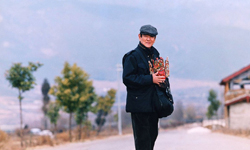
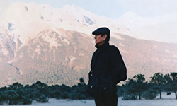
After his wuxia films, Zhang returned to his roots, and shot a family drama that highlights life in rural China in contrast to the urban one. Once more, the images he presented are of utmost beauty, through a distinct simplicity that allows the audience to focus on the characters and plot. This time, however, realism is not present, particularly regarding the Chinese authorities, who are somewhat idealised. The film is a bit too melodramatic at moments but, on the other hand, Ken Takakura gives a wonderful performance in a laconic and measured fashion that counters the one by Li Jiamin, who plays himself with a rather entertaining hyperbole.
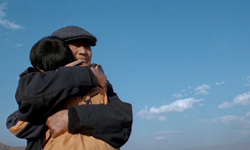
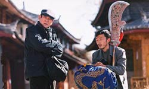
The story revolves around Takata, an elderly fisherman who has been alienated for years from his son Ken-ichi. When he learns that his son is dying, he tries to revisit him, but his son refuses to see him. However, his wife gives him a videotape Ken-ichi has recorded, in order for him to get to know his son better. From the video, Takata learns that Ken-ichi is a passionate researcher of Chinese opera and, in his travels, has met the singer Li Jiamin, who has promised to perform the titular song in a year. Takata decides to travel to Yunnan, where Li Jiamin resides, in order to record him himself and bring the footage to his son, as a token of his wish to heal the breach among them.
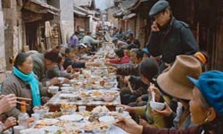
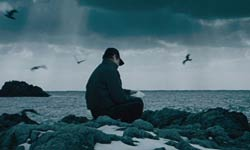
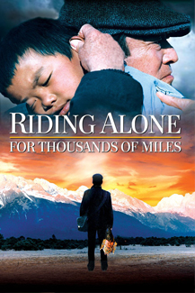
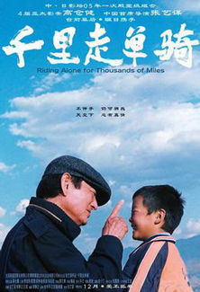
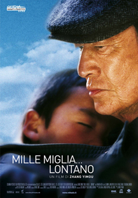
Being a Sino-Japanese co-production, the film premiered at the Tokyo International Film Festival in October 2005 and was only released later in China in December 2005.
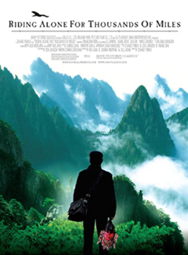
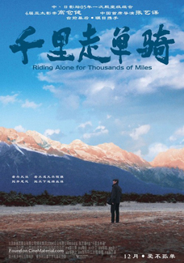
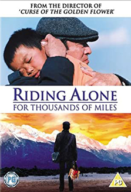